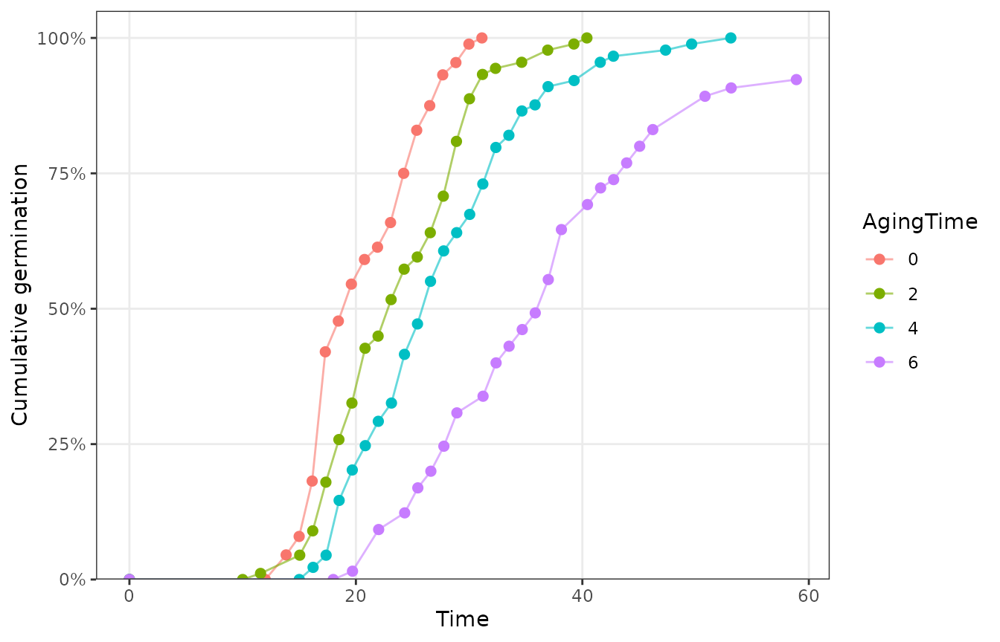
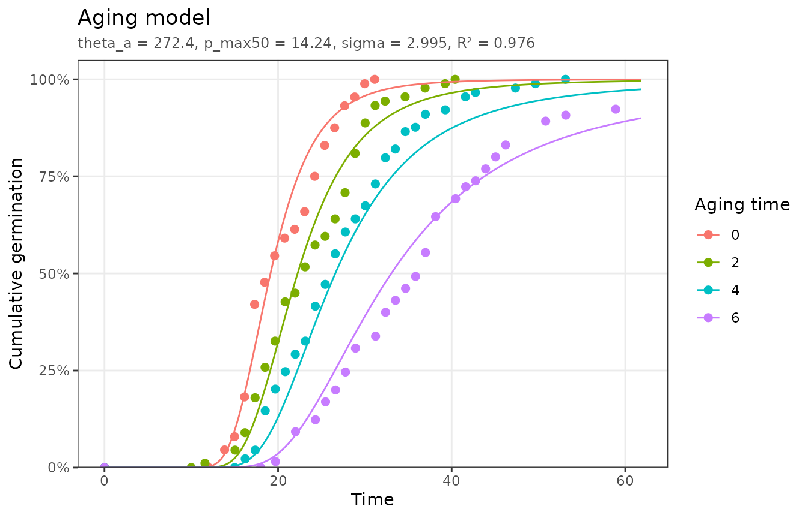
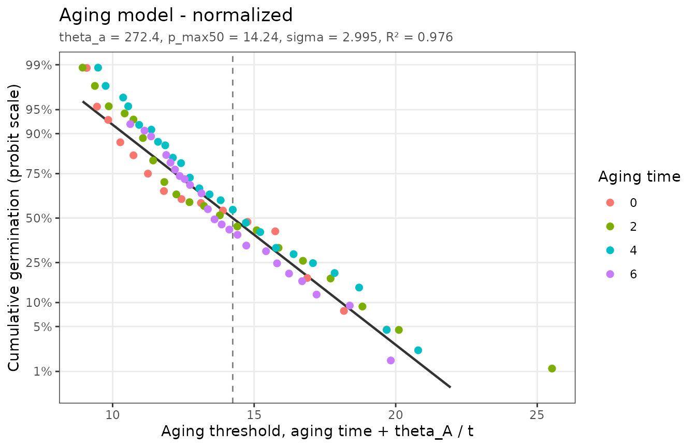

The model
As seeds age, germination first slows while viability stays nearly constant. Viability then declines along a sigmoid curve. Seeds in a lot have a range of potential lifetimes that follow a normal distribution (Ellis and Roberts, 1981). Bradford et al. (1993) used the increasing germination delays to predict that decline with a threshold model:
where
is the aging (storage) period,
is the maximum lifetime of seed fraction g, normally
distributed with median
and standard deviation
,
and
is the aging time constant. Germination falls as the aging period
approaches each seed’s lifetime, so the fitted model uses the upper tail
of the distribution:
Fitting
aging_data holds germination time courses of lettuce
seeds after 0 to 6 days of accelerated aging:
plot_germ_data(aging_data, color = "AgingTime")
fit <- fit_aging(aging_data)
fit
#> <pbtm_fit> Aging model
#>
#> theta_a p_max50 sigma
#> 272.4 14.24 2.995
#>
#> n = 93, pseudo-R2 = 0.9764, AIC = -539.3
autoplot(fit)
Half of the seeds would lose viability after 14.2 days of accelerated aging, with a standard deviation of 3 days. The units of are aging time × germination time (here day·hours).
On the normalized axis, each observation is placed at the aging threshold implied by its germination time, . The line shows the fraction of seeds whose lifetime exceeds that threshold:
autoplot(fit, type = "normalized")
#> Dropped 7 points that cannot be shown on the linear/probit axes (e.g. 0% or
#> 100% germination).
Predicting the loss of viability
The fitted distribution predicts the viability curve beyond the aging periods tested, which is the main practical use of the model. Viability after aging period is the fraction of seeds with :
p <- coef(fit)
aging <- seq(0, 25, by = 5)
data.frame(
AgingTime = aging,
viability = pnorm(aging, p[["p_max50"]], p[["sigma"]], lower.tail = FALSE)
)
#> AgingTime viability
#> 1 0 0.999999011
#> 2 5 0.998986461
#> 3 10 0.921720559
#> 4 15 0.400228521
#> 5 20 0.027287056
#> 6 25 0.000164234Accelerated-aging results must be calibrated against the temperature and moisture conditions under which the seeds will actually be stored (Bradford and Bello, 2023).
References
Bradford, K.J., Bello, P. (2023) Understanding seed behavior: populations of individuals. Acta Hortic. 1365: 1–16. https://doi.org/10.17660/ActaHortic.2023.1365.1
Bradford, K.J., Tarquis, A.M., Duran, J.M. (1993) A population-based threshold model describing the relationship between germination rates and seed deterioration. J. Exp. Bot. 44: 1225–1234. https://doi.org/10.1093/jxb/44.7.1225
Ellis, R.H., Roberts, E.H. (1981) The quantification of ageing and survival in orthodox seeds. Seed Sci. Technol. 9: 373–409.